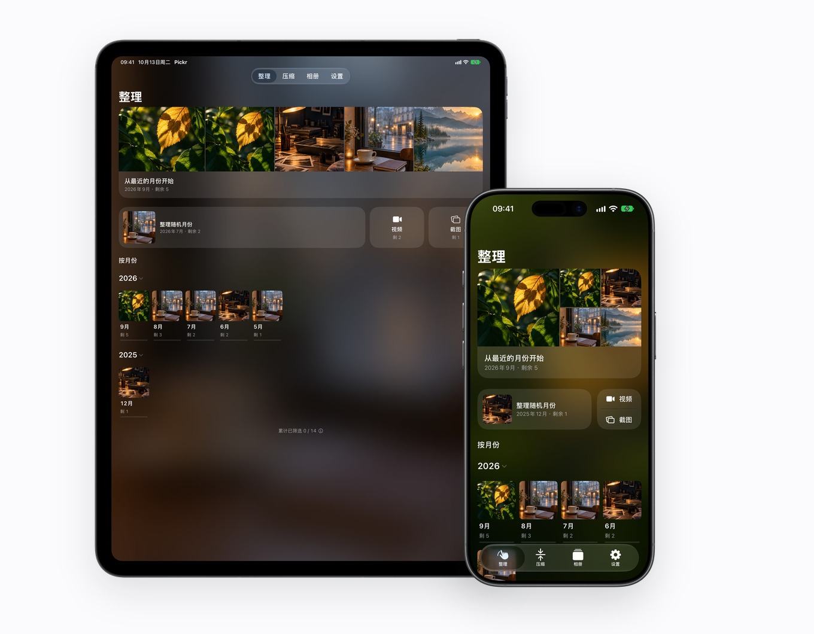
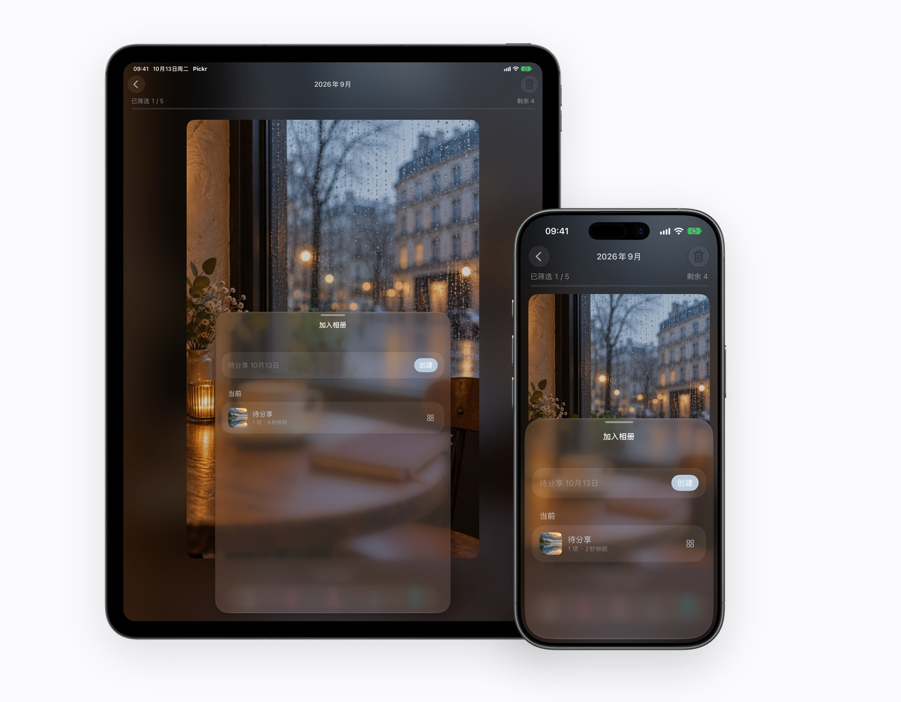
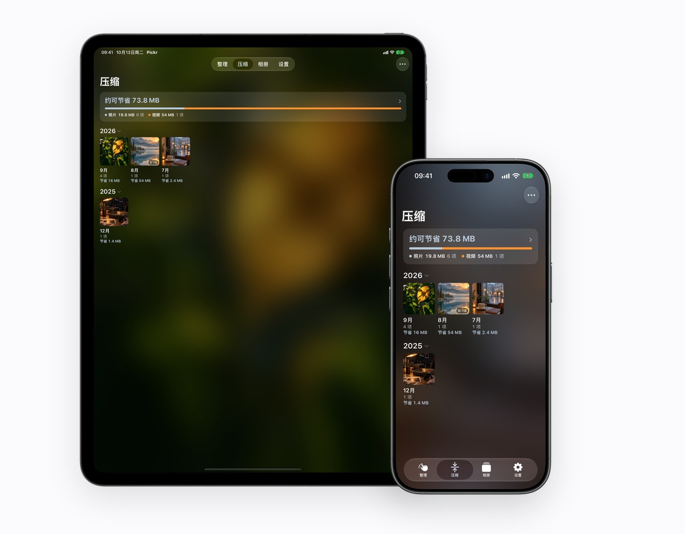
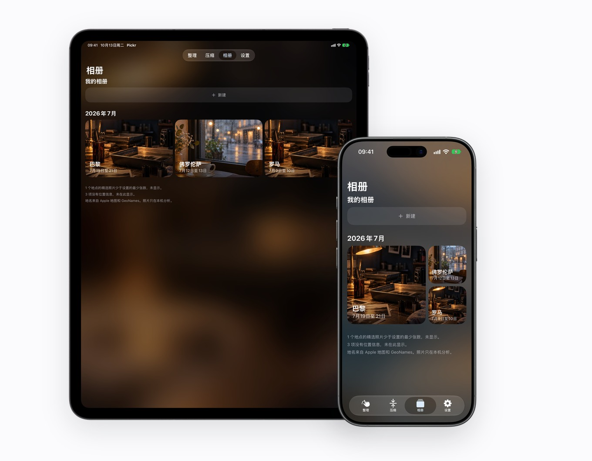
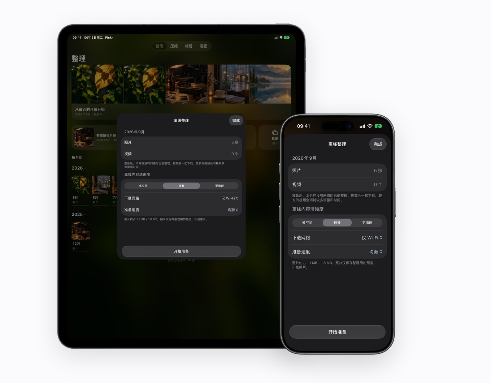

旅行自动成册
重温一座城，从一组精选照片开始
按「哪几天在哪个城市」自动把旅途照片归成相册，并在本机挑出构图与清晰度更好的画面，一键存回系统「照片」相簿。
不用一口气面对几万张照片。每次挑一个月，上滑待删除、下滑收藏，删除前整批复核。本机画质压缩与旅行地点相册，在 iPhone 与 iPad 上无缝接力。





按月整理
把漫长的相册切成三五分钟就能理完的月份。随时停下，下次打开还在老地方；无论是 iPhone 随手刷，还是 iPad 大屏审片，体验始终如一。
从最近的月份开始，或抽一个随机月份、专项清理视频与截图。自动记住上次停下的那一张。
上滑标记待删除，下滑加入收藏，想留下的时刻当场收进「我的相册」。每一步都能撤回。
连拍与同一角度的照片在本机自动归组，两两同屏比对对焦与表情，只留最满意的一张。
删除绝不当场发生。所有待删照片先集中在「待确认」列表摊开检查，确认无误再执行。
通过系统确认弹窗移入 iOS「照片 → 最近删除」保留 30 天，随时可以恢复原片。
本机无损感瘦身
视频转 HEVC、照片转 HEIC，全程在 Apple 芯片内直接重编码。转换前先算清预计可释放的空间，转换后逐项给出本机画质评分。
随时长按同屏比对叶脉纹理与暗部层次。比对不过关的项会自动归入「建议先对比」，绝不盲目替换。
压缩替换后，照片原有的拍摄日期、经纬度坐标、收藏状态及所属相册原封不动；被替换的原片同样在系统「最近删除」保留 30 天。
地点相册与多端同行
读取照片自带的地点与时间，把散落在各月的旅途自动聚合成册；整理决定与压缩标记通过你本人的 iCloud 私有库在 iPhone 与 iPad 间实时同步。
按「哪几天在哪个城市」自动把旅途照片归成相册，并在本机挑出构图与清晰度更好的画面，一键存回系统「照片」相簿。
长按任意月份即可把云端照片提前准备到本机，飞行模式或高铁无网时照常顺滑过片。联网后，进度自动通过个人 iCloud 同步至另一台设备。
免费与 Pickr Pro
没有注册账号，没有全屏广告。日常整理与离线准备直接开放，会员提供月度、年度与一次性买断三种方案。
解答与支持
按月浏览、滑动筛选、相似照片擂台、我的相册与离线准备均免费开放；待确认队列可免费保存 7 次（每次不限照片张数）。无限次保存、本机画质压缩、地点相册保存与 iCloud 同步为 Pickr Pro 会员功能。
不会。整理、相似分析与压缩全部在这台 iPhone 或 iPad 上完成，照片从不离开你的设备。开启 iCloud 同步时，也只有整理进度标记（不含照片本身）会存进你自己的 Apple iCloud 私有库。
上滑只是放进「待确认」列表，不会立刻删除。你可以随时撤销上一步，或在待确认页整批恢复；即使确认删除后，系统「最近删除」仍会保留 30 天。
替换前有本机画质评分，也可随时按住对比原片与压缩版；拍摄时间、GPS 经纬度等 EXIF 元数据完整保留。不满意就不替换，原片原样不动。
Pickr 已在 App Store 正式上架，同时原生适配 iPhone 与 iPad，需要 iOS / iPadOS 17.0 或更新版本（自动地点相册精选依赖 iOS 18 本机图像分析）。